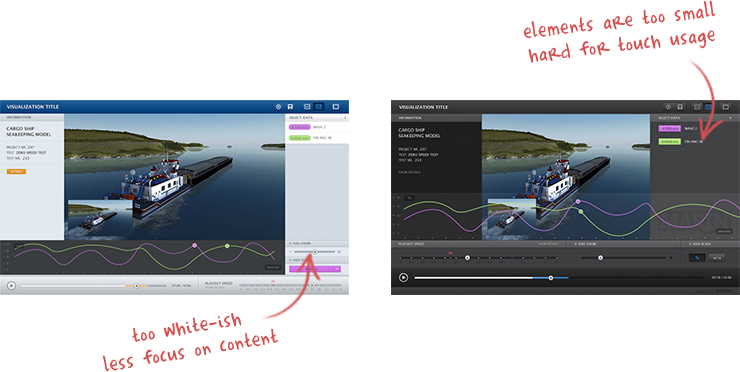
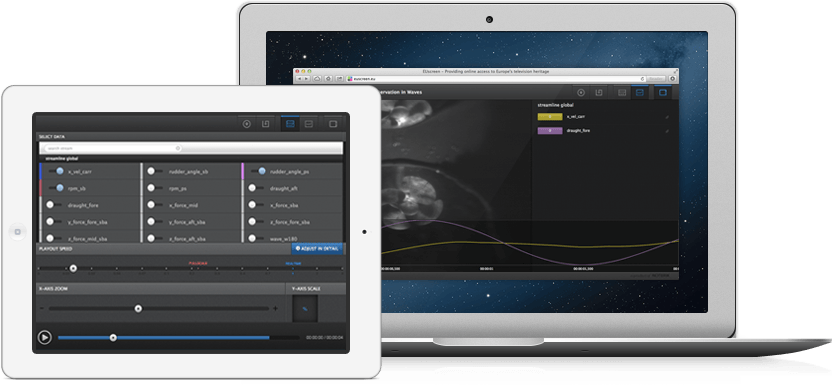

Visualization Tool is one of Noterik great products which allows data to be visualized along with a video running next to it. The design process focuses on creating an interface which allows complex functionalities to be added without making the interface too sophisticated, crowded and too cumbersome for the end users as a great design complements the content while making the app easy to be used and intuitive. The design went through several iterations to make sure the end product fits the goal, this includes the usage of tablet of other computers as a second screen to be as seamlessly as possible.
The design for the visualization tool has gone through several iterations where each of them focused on combining the right UI/UX and functionalities into one blank canvas. Below are a couple of the iterations. Too much white elements can distract the user from the content while small elements is not good for touch interactions. The process of designing the UI consist of finding the right balance between these guidelines.
One of the feature of the visualization tool is the usage of your tablet or computer as a second screen for the controller. When the second screen is activated, all of the controller moved to the tablet and left the main screen with the video and the content. This will increase productivity when we are working on big screens like tv, projector, etc. The UI and HTML development focused on reusing the same elements on either page and not building a separate codes. This will ensure future updates to be added with less work and faster.

You can contact me at a.khrisna@live.com
or find me in one of the social media sites below